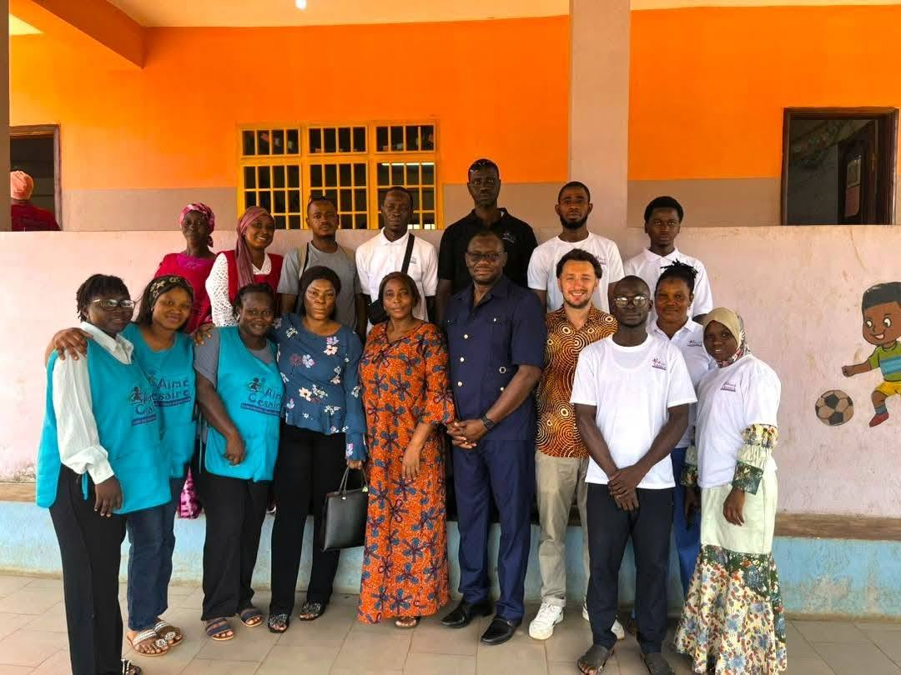

Équipe pédagogique
Une équipe dynamique, expérimentée et ambitieuse, engagée pour la réussite de chaque enfant.
Mission et cadre
Le Groupe Scolaire Aime Cesaire TKB accompagne les élèves de la maternelle au collège avec exigence, sécurité et bienveillance.
Pourquoi nous ?
Des arguments concrets qui font la différence au quotidien.
Une équipe dynamique, expérimentée et ambitieuse, engagée pour la réussite de chaque enfant.
Des activités favorisant la confiance et l'autonomie des enfants dès le plus jeune âge.
Des fêtes à thème et manifestations culturelles régulières pour animer la vie scolaire.
Aire de jeux dédiée à la maternelle et terrain multisports pour le primaire.
Salle informatique et bibliothèque accessibles dès le CE1 pour préparer l'avenir.
Vidéosurveillance des cours et récréations pour la sécurité de tous.
Priorités pédagogiques
Langue d'instruction principale, travaillée dès le plus jeune âge à l'oral comme à l'écrit.
Raisonnement, rigueur et résolution de problèmes au cœur du programme quotidien.
Initiation au numérique dès le primaire pour préparer les élèves aux usages actuels.
Ouverture progressive à une langue internationale utile pour la suite du parcours.
Cadre de vie
Les conditions d'apprentissage font partie de l'enseignement. Les espaces sont pensés pour travailler, lire, jouer et grandir.

Un espace extérieur pour les temps de récréation et les activités encadrées.

Un espace pour développer la culture générale, la lecture et la curiosité.

Une salle équipée pour introduire les élèves aux outils informatiques.
Galerie
Quelques moments qui racontent la vie de l'établissement au quotidien.
Notre équipe
L'équipe du Groupe Scolaire Aimé Césaire TKB réunit des professionnels de l'éducation engagés au quotidien pour offrir à chaque enfant un enseignement de qualité, dans un cadre bienveillant et exigeant.
Enseignants, encadrants et personnel administratif travaillent ensemble pour faire de l'école un lieu où l'on apprend, où l'on grandit et où l'on prépare son avenir.

Partenariats
L'école collabore avec des organisations françaises et internationales qui partagent son engagement pour l'éducation.
Partenariat franco-guinéen avec l'Ambassade de France en Guinée et en Sierra Leone.
Ouverture sur l'engagement international.
Appui à des projets solidaires et éducatifs depuis 1967.
Contribution autour du livre et de la lecture.
{kind=link}
{kind=link}
{kind=link}
{kind=link}